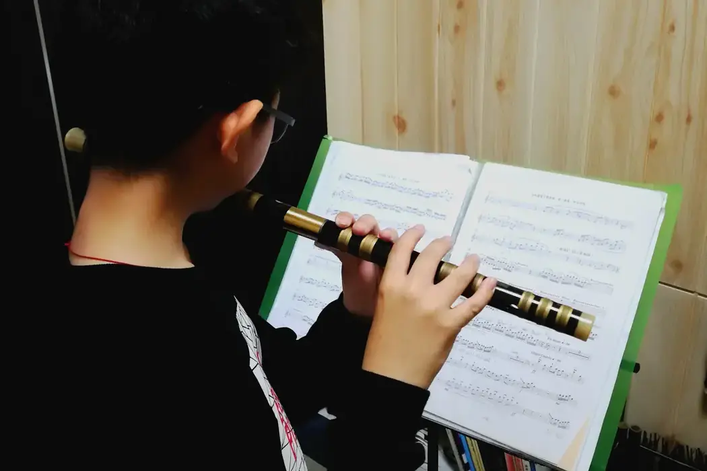

竹笛某個音吹不穩，先查手指有沒有遮好孔，再改嘴形。有音孔未完全遮好，該音的反應就會受影響。半孔和快速吐音也一樣，先看動作能否重複，再談速度。

嘴形改了很多次，那個音還是不穩。這時可以放下笛子，看看手指下面。
吹不響，未必因為口風
手指不需要用力壓到發白。接觸位置合適，孔邊沒有漏出空隙，已經足夠。
孔距與手形是否相配，也會影響能否自然遮好，所以「再用力一點」並不是答案。
檢查時一次只加一根手指。由較容易的指法開始，慢慢增加要遮住的孔，聽哪一步開始不穩。停在那一步，放下笛子看看接觸位置，再重新拿起。一口氣蓋住所有孔再猜哪裏漏氣，會難找得多。
也可以對着鏡子看手腕是否扭得太多，手指有沒有為了伸向遠處而離開原來的位置。
不要用膠帶或其他物件長期代替正常按孔，否則難以建立真正的手感。
靜止時遮得好，換指時不一定。選兩個容易出問題的音，放慢交替，聽新落下的手指是否每次都回到同一位置。先追求穩定，速度留到之後。
手指跨度長期吃力，可以請老師評估樂器是否合手。買了樂器，不代表身體要勉強遷就。選笛時的手形考慮，見第一支笛子：D、G 還是 F 調。
封孔變得自然，你才分得清今天要整理的是手，還是那道氣流。
半孔為甚麼總是忽高忽低？
半孔不是把手指大概抬起一半便會準。它要靠慢速、可靠的參考音和錄音，建立細微的位置感，手形也要可以重複。
半孔容易偏高偏低，轉調段落因此不穩。覺得自己音準差時，先把範圍縮到兩個音，聽有沒有固定的偏差。問題可能在耳朵，也可能在氣息、手型或角度，範圍縮小才判斷得到。
練法由小到大：
- 先練相鄰兩音。
- 把半孔音與前後各一音連成三音短句，慢到手指能清楚停在位置。
- 放入短句，用持續音、唱名和錄音檢查。
- 穩定後才把節奏加回去，看較快速度下手形有沒有改變。
聽的次序也有講究：先聽音高走向，再看調音器的讀數。次序倒過來，耳朵便沒有機會練習。
若每次落點不同，縮小動作範圍，重新找可重複的手感。孤立的長音練得再多，也不能省略進入和離開半孔的轉換。
同一段總是走音，就停在最早偏掉的那個音，由那裏重新開始。
指法因樂器和音區而有差異，要配合所用的笛子和教學安排確認。音準和動作一起建立，轉調才不會變成一連串臨時補救。
快速吐音，怎樣才算清楚？
舌頭太硬，聲音會碎；太鬆，又不夠清楚。舌頭負責交代起點，氣流仍要支撐聲音，不應每一下都用整個身體重新推動。
一到快段或節拍器就亂，很多時是重拍和分組未建立，手指未必太慢。先只留一句，分好組慢吹，找出拍子從哪一下開始亂。
練習可以這樣排：
- 用同一音吹四個均勻短音，確認每一下音量相近。
- 把其中兩下換成另一音，做兩音交替。
- 同音清楚、換音便糊，就把舌頭與手指分開觀察。
- 用節拍器一級一級往上加，每級都先聽音頭、拍點與音量是否一致。
單吐和雙吐按程度安排。雙吐一樣要在可控制的速度中先建立均衡，不以最快速度作起點。
接回曲目時，保留樂句的重點，也試試改變分組和重音，避免每個音都變成一樣重的拍點。快段清楚又有方向，聽者才會聽到音樂，而不只是舌頭的動作。
常見問題
按孔要用很大力才遮得住，正常嗎？
不用壓到手指發白。先查接觸位置和孔邊有沒有空隙。若跨度長期吃力，請老師評估這支笛是否合手。
半孔可以只靠調音器練嗎？
調音器可作參考，但要先用耳朵聽音高走向，並把半孔放回相鄰音和短句裏，否則離開調音器就未必準。
吐音應該先練單吐還是雙吐？
按程度安排。無論哪一種，都由同一音的均勻短音開始，在可控制的速度裏建立均衡，再慢慢加快。
今天只選一個最常出事的音，逐孔加手指，找出哪一步開始不穩。吐音的氣流基礎可再讀竹笛氣息與長音，手形要旁人才看得清楚，笛子課程有課堂安排。